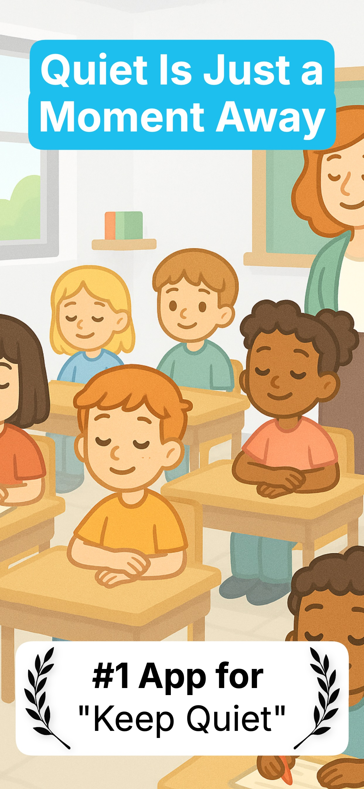
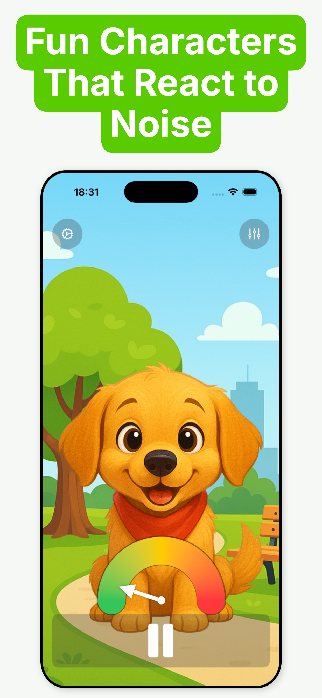
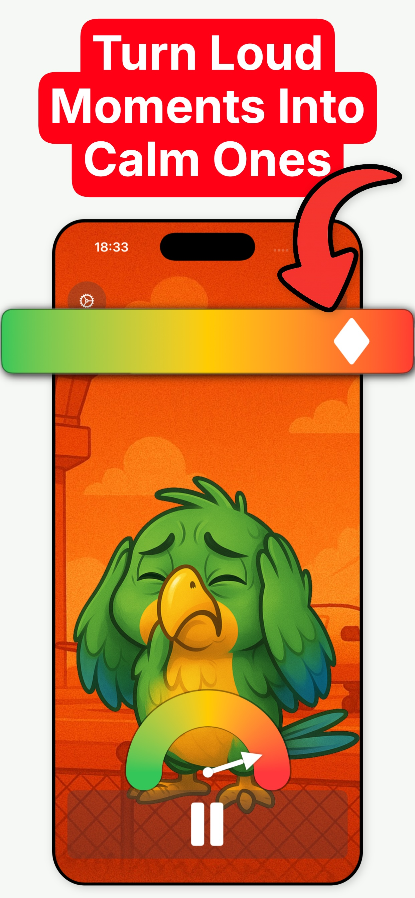
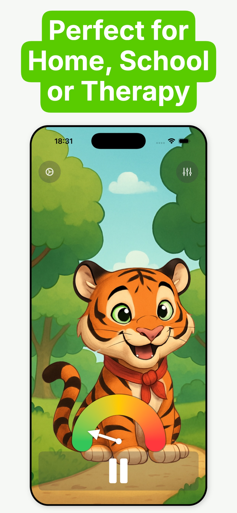
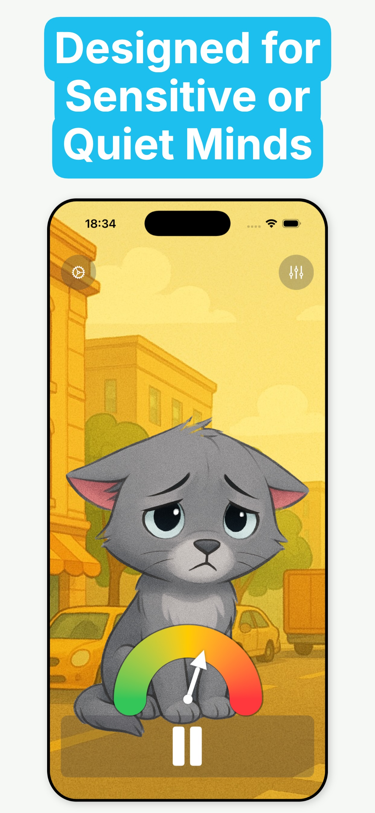
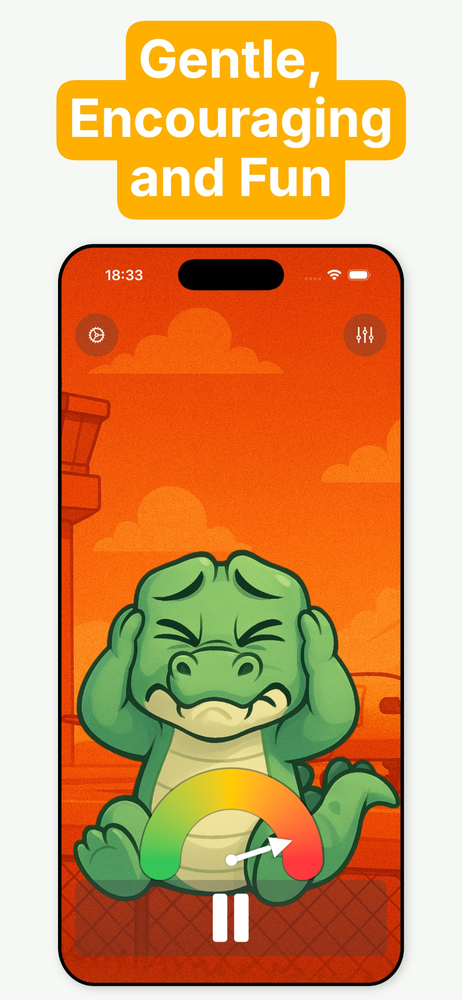

Open the app & pick a character
Choose an owl, robot or other friendly face and place the iPhone or iPad where kids can see it — or mirror it to the classroom whiteboard.
Friendly characters react as the room gets louder. Kids see the noise, watch the meter climb from green to red, and bring the volume down themselves. A calmer classroom, a quieter home.
★ 4.8 rating · No ads · Ages 4+ · iPhone, iPad & Mac · 11 languages
Characters react to your room's real sound level — live.
Straight from the App Store listing — characters, colour feedback, speedometer dial and the quiet-time timer.






Choose an owl, robot or other friendly face and place the iPhone or iPad where kids can see it — or mirror it to the classroom whiteboard.
The app measures the room's sound level in real time. As noise rises, the character's expression changes and the background shifts from calm green to warning red.
Children lower their own volume to keep the character happy. Add the quiet-time timer to set a goal and turn staying quiet into a game they can win.
Practical, real-world ways to use a visual noise meter — in class, at home, and in sensory-friendly spaces.
How teachers use an on-screen noise monitor to manage volume during group work, tests and indoor recess.
Read the guide → TeachersSave your voice: swap constant shushing for a visual cue students respond to on their own.
Read the guide → TeachersWhat noise levels mean for learning, and how to calibrate the right level for each activity.
Read the guide → Teachers & parentsVoice levels 0–4 explained, plus how a live meter makes "inside voices" concrete for kids.
Read the guide → ParentsDinner tables, car rides, homework time — how a character kids love turns "be quiet" into a game.
Read the guide → ParentsCombine a countdown with a live noise meter so kids can see themselves winning quiet time.
Read the guide → ParentsFresh twists on the classic quiet game — with a noise meter as the impartial referee.
Read the guide → Sensory & SENDUsing gentle visual feedback to make noise predictable and rooms calmer for sensitive kids.
Read the guide →A visual noise meter turns sound into something children can see. Noise Meter – Keep Quiet uses the device's microphone to measure the room's volume in real time: a friendly character changes expression, the background shifts colour, and a green-to-red noise bar shows exactly how loud things are — so kids can lower their own volume without being told. Learn more →
Open the app on an iPad (or mirror it to your interactive whiteboard), pick a character, and let the class watch. As chatter rises the character reacts and the meter climbs toward red, prompting students to self-correct — no shushing needed. Learn more →
Replace verbal reminders with a visual cue. When children can see the noise level — and a character reacting to it — staying quiet becomes a game of keeping the character happy rather than obeying an instruction. Learn more →
Yes. Set a quiet-time goal — say, ten minutes of reading — and the timer runs while the meter shows the live noise level, turning quiet time into a challenge kids can win. Learn more →
Yes. Gentle visuals, colour feedback that never punishes, reduced-motion and high-contrast accessibility support, dark interface, and no ads or interruptions make it a good fit for sensory-friendly rooms. Learn more →
Focused work is comfortable around normal-conversation levels or lower; sustained loud noise makes concentration and reading harder. Every room differs, so the app shows the level at a glance and lets you decide what "too loud" means per activity. Learn more →
Yes — free to download on iPhone and iPad, with no ads. Optional premium upgrades unlock extras like additional characters and themes. Get it on the App Store →
The microphone is used only to measure the volume level in real time so the meter and characters can react. The app is ad-free and rated 4+ on the App Store. Read the privacy policy →
Download Noise Meter – Keep Quiet free on iPhone and iPad. Pick a character, set a quiet-time goal, and let the kids do the rest.
Free download on theApp Store